방송통신기사 (2022-10-08 기출문제)
1과목: 디지털 전자회로
1. 커패시터 필터 정류기에서 부하전류가 증가하면 리플전압은?
- 작아진다.
- 커진다.
- 변화가 없다.
- 커진 뒤 감소한다.
(정답률: 알수없음)

2. 다음 정전압 회로에서 22[V]에서 30[V]까지 변화하는 입력전압 VS를 가지고 있다. 조정된 제너 다이오드의 양단의 출력전압이 12[V]이고 부하저항이 140[Ω]에서 100[kΩ]까지 변한다면, 최대허용 직렬저항 RS는 약 얼마인가?
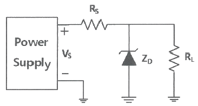
- 117[Ω]
- 120[Ω]
- 123[Ω]
- 126[Ω]
(정답률: 알수없음)
3. 다음 그림은 출력이 10[V]로 유지할 수 있도록 설계된 제너 다이오드 정전압 회로이다. 제너 전류가 최소(IZK) 4[mA], 최대(IZM) 40[mA]일 때, 이들 전류에 대한 최소 입력전압은?
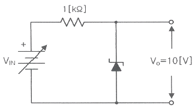
- 10[V]
- 14[V]
- 1.0[V]
- 1.4[V]
(정답률: 알수없음)
4. 다음과 같은 증폭기의 교류 입력전압의 크긱 20[mV]일 때, 교류 출력전압의 크기는 약 얼마인가?
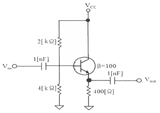
- 20[mV]
- 30[mV]
- 40[mV]
- 50[mV]
(정답률: 알수없음)
5. 게이트와 소스 단자 사이의 전압이 0일 때 드레인 전류가 상수가 되는 FET의 드레인-소스 단자 사이의 전압은 무엇인가?
- 바이어스 전압
- 핀치-오프 전압
- 컷-오프 전압
- 포화 전압
(정답률: 알수없음)
6. 부궤환 증폭회로의 특징으로 틀린 것은?
- 비직선 일그러짐 감소
- 잡음감소
- 이득 증가
- 대역폭 증대
(정답률: 알수없음)
7. 다음 중 병렬 전류궤환회로의 임피던스 특성으로 옳은 것은?
- 입력 임피던스는 증가하고, 출력 임피던스는 감소한다.
- 입력 임피던스는 감소하고, 출력 임피던스는 증가한다.
- 입력 임피던스와 출력 임피던스 둘다 증가한다.
- 입력 임피던스와 출력 임피던스 둘다 감소한다.
(정답률: 알수없음)
8. 다음 중 A급 전력 증폭회로에 대한 설명으로 틀린 것은?
- 입력 신호의 전 주기에 대하여 항상 비활성영역에서 증폭 동작을 한다.
- 입력 출력 파형은 일그러짐이 없이 똑같은 형태를 유지한다.
- 종단의 대신호 증폭에는 전력 손실이 크게 발생하므로 효율이 좋지 않다.
- 직접 부하를 출력에 접속하는 직접 결합방식과 변압기를 경유하여 접속하는 변압기 결합방식으로 구분된다.
(정답률: 알수없음)
9. 다음과 같은 입력전압 파형과 출력전류 파형을 나타내는 전력증폭회로의 동작등급은? (단, 증폭회로의 이득은 1 이다.)
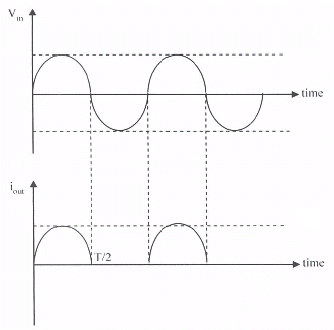
- A급
- AB급
- B급
- C급
(정답률: 70%)
10. 정현파 발진기로서 부적합한 것은?
- LC 발진기
- 수정 발진기
- 멀티바이브레이터
- CR 발진기
(정답률: 알수없음)
11. 진폭변조시 주파수 영역에서 스펙트럼 겹침현상이 발생되지 않고 피변조파의 포락선이 변조신호 형태와 같이 위한 조건으로 올바른 것은? (단, fc는 반송파 주파수, B는 변조신호 대역폭, m은 변조도이다.)
- fc＜B, m≤1
- fc＜B, m＞1
- fc＞B, m≤1
- fc＞B, m＞1
(정답률: 알수없음)
12. 3[MHz]의 반송파를 주파수가 5[kHz]인 신호파로 주파수변조 하였을 때 최대 주파수 편이가 ±80[kHz]라면 소요 대역폭은?
- 40[kHz]
- 80[kHz]
- 85[kHz]
- 170[kHz]
(정답률: 알수없음)
13. 다음 중 디지털신호 전송방식에 대한 설명으로 틀린 것은?
- 기저대역전송은 디지털신호를 그대로 또는 다른 전송부호로 변환하여 전송하는 방식이다.
- 반송대역전송은 디지털변조하여 전송하는 방식이다.
- 기저대역전송은 대역폭이 좁은 반면 전송 가능한 거리가 길다.
- 반송대역전송을 하기 위해서는 반송파가 필요하다.
(정답률: 알수없음)
14. 다음 중 주파수변조를 진폭변조와 비교한 설명으로 틀린 것은?
- 페이딩의 영향이 적다.
- 주파수의 혼신방해가 작다.
- 사용주파수대역이 좁다.
- S/N비가 개선된다.
(정답률: 알수없음)
15. 이상적인 펄스 파형에서 펄스폭이 30[μs]이고, 펄스반복주파수가 1[kHz] 일 때 점유율은?
- 3[%]
- 7[%]
- 30[%]
- 70[%]
(정답률: 알수없음)
16. 트랜지스터의 스위칭 작용에 의해서 발생된 펄스 파형에서 턴 오프 시간(turn-off time)은 무엇인가?
- 하강시간+축적시간
- 상승시간+지연시간
- 축적시간+상승시간
- 지연시간+상승시간
(정답률: 알수없음)
17. 다음 회로의 입력에 정현파를 넣었을 때 출력 파형은?
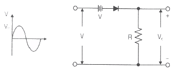
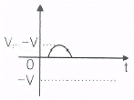
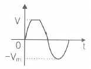
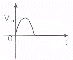
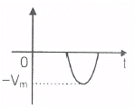
(정답률: 알수없음)
18. 다음 논리 회로는 어떤 논리 게이트(Logic Gate)로 동작하는가?
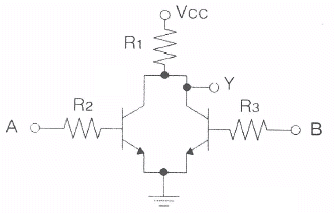
- OR
- NOR
- NAND
- AND
(정답률: 알수없음)
19. 다음 중 플립플롭을 구성하는데 필요한 회로는 어느 것인가?
- 비안정 멀티바이브레이터
- 쌍안정 멀티바이브레이터
- 무안정 멀티바이브레이터
- 단안정 멀티바이브레이터
(정답률: 알수없음)
20. 다음 중 Master-Slave 플립플롭은 어떤 현상을 해결하기 위해 사용되는가?
- Race 현상
- Toggle 현상
- 펄스 지연 현상
- 반전 현상
(정답률: 알수없음)
2과목: 방송통신 기기
21. 다음 중 연주소의 주요 설비가 아닌 것은?
- 텔레비전 스튜디오
- 스튜디오 부조정실
- 편집실
- 송신 안테나
(정답률: 알수없음)
22. 다음 마이크로폰의 종류 중 주파수특성은 좋으나 전력공급으로 기동성이 떨어지는 것은?
- 무빙 코일(Moving Coil) 마이크
- 콘덴서(Condenser)마이크
- 리본(Ribbon)마이크
- 원형(Ring)마이크
(정답률: 알수없음)
23. 임피던스가 25[Ω]인 반파장 안테나와 특성임피던스가 100[Ω]인 선로를 정합하기 위한 임피던스 값은?
- 150[Ω]
- 250[Ω]
- 25[Ω]
- 50[Ω]
(정답률: 알수없음)
24. 다음 중 디지털 오디오 국제표준 규격이 아닌 것은?
- AES/EBU
- SPDIF
- SMPTE-259M(SDI)
- KS
(정답률: 알수없음)
25. 다음 중 AM 신호의 복조기로 가장 많이 사용되는 것은?
- 비(Ratio)검파기
- 직교형 검파기
- 경사형 변별기
- 포락선 검파기
(정답률: 알수없음)
26. 라디오 송신 안테나의 근처에는 강한 전파로 인하여 다른 방송의 수신이 방해를 받게 되는 지역을 무엇이라고 하는가?
- 페이딩(Pading) 지역
- 블랭킷(Blanket) 지역
- 리전(Region) 지역
- 오버랩(Overlap) 지역
(정답률: 알수없음)
27. 주파수가 2[Hz]인 신호를 FM 변조하여 변조된 신호의 최소 주파수와 최대 주파수가 각각 2[kHz]이고, 4[kHz]인 경우 카슨 법칙(Carson's rule)에 따른 대역폭[Hz]은 얼마인가?
- 2,002
- 3,003
- 4,004
- 6,006
(정답률: 알수없음)
28. 다음 중 MPEG 표준 중 멀티미디어 정보 검색과 관련된 표준은?
- MPEG-3
- MPEG-4
- MPEG-7
- MPEG-21
(정답률: 알수없음)
29. 연주소에서 보내온 TV프로그램 신호로부터 영상신호와 음성신호를 각각 송신기에 입력시키고, 이 신호를 반송파로 변조하여 안테나를 통해 전파를 발사하는 설비를 무엇이라 하는가?
- 제작설비
- 수신설비
- 송신설비
- 다중화설비
(정답률: 80%)
30. 다음 중 방송프로그램을 링크하는 STL(Studio Transmitter Link)에 있어서 디지털 마이크로웨이브 구성의 설명으로 틀린 것은?
- 디지털 입출력은 DVB-ASI 또는 DS3 전송형태이다.
- 디지털방송이므로 아날로그시혼의 전송은 반드시 유선망을 통해서만 전송할 수 있다.
- 링크 송신의 변조방식은 16/32/64 QAM, QPSK 등을 사용한다.
- 전송신호의 형태에 따라 HD/SD Encoder, Decoder를 장착하여 전송할 수 있다.
(정답률: 알수없음)
31. 다음 중 괄호 안에 들어갈 말로 알맞은 것은?
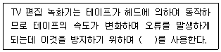
- ENG(Electronic News Gathering)
- UPS(Uninterruptible Power System)
- IRC(Incrementaly Related Carrier)
- TBC(Time Base Corrector)
(정답률: 알수없음)
32. 다음 중 위성 방송용 파라볼라 안테나에서 수신 전파의 주파수대는 12[GHz], 안테나의 직경은 1[m], 안테나의 개구효율이 0.64라고 할 때 이득은 약 몇 [dB] 인가?
- 20
- 30
- 40
- 50
(정답률: 알수없음)
33. 신호를 간선에서 분기할 때 사용되는 것으로 지선측에서 간선의 출력측에 영향이 나타나지 않는 특성을 갖는 것은?
- 방향성 결합기
- 스크램블러
- 직렬유닛
- 보안기
(정답률: 알수없음)
34. 다음 중 유선망을 설계하는데 있어서, 장거리에 분산되어 있는 다수의 가입자에게 가장 효율적인 형태는?
- Tree형
- Ring형
- Star형
- Mesh형
(정답률: 알수없음)
35. 다음 중 인터넷방송을 구축하기 위한 장비별로 구성이 잘못된 것은?
- 영상장비 : 디지털 카메라, 디지털 편집장비, 인코딩 스테이션 등
- 음향장비 : 마이크, 녹음기, 오디오 Mixer 등
- 정보저장장비 : Digital Video Recorder, VOD Server, Switching Hub System 등
- 네트워크장비 : 인터넷 전용선, LAN Cable 등
(정답률: 알수없음)
36. IPTV 수신기에서 프로그램에 대한 정보를 추출하여 메모리 스택에 보내줌으로써 어플리케이션에 EPG를 구축하거나 CA정보를 추출할 수 있도록 정보를 제공하는 장치는?
- 트랜스포트 역다중화 드라이버
- 디스플레이 드라이버
- HDMI
- 다중화 드라이버
(정답률: 70%)
37. DMB의 데이터 서비스에 대한 설명으로 틀린 것은?
- 데이터 서비스는 DMB의 주서비스인 Audio, Video 외에 문자, 그림, 동영상 등의 다양한 정보를 제공한다.
- 교통여행정보 서비스, TPEG 규격 플랫폼을 기반으로 다양한 교통정보를 MSC의 TDC 채널을 이용하여 전송한다.
- 독립 데이터 채널은 프로그램과 연동없이 운용되는 채널로서 파일형식 전달방법(MOT)과 스트리밍 전달방법(TDC)이 있다.
- 비디오 부가데이터 서비스인 BIFS는 MPEG-2의 규격을 따르며, JPEG, PNG, 정지영상, 도형, 텍스트 등을 비디오에 오버레이할 수 있다.
(정답률: 알수없음)
38. 방송신호 측정 시 송신기 입력 전압이 0.5[V]일 때 출력 전압이 50[V] 였다면 송신기의 전압이득은 몇 [dB] 인가?
- 10
- 20
- 30
- 40
(정답률: 알수없음)
39. 다음 중 전계강도 측정기의 0[dB]의 기준이 되는 전계강도는?
- 1[mV/m]
- 10[mV/m]
- 1[μV/m]
- 10[μV/m]
(정답률: 알수없음)
40. 스트림 분석에 있어 시리얼 디지털 시스템의 특징으로 틀린 것은?
- 분배과정 중 나타나는 이득, 위상, 주파수 응답 특성이 매우 양호하다.
- 아날로그와는 달리 그룹딜레이(Group Delay), 왜곡(Distortion) 등의 문제가 없다.
- 분배 또는 라이팅에서는 별도의 프로세성이 없기 때문에 기본적인 잡음 외에는 열화가 없다.
- 매우 넓은 대역폭을 가지기 때문에 물리적인 손상에도 비트에러가 발생하지 않는다.
(정답률: 알수없음)
3과목: 방송미디어 공학
41. 다음 중 TV중계방송의 형식이 아닌 것은?
- 생방송
- 녹화방송
- 편집방송
- 지연방송
(정답률: 알수없음)
42. 다음 중 잘못된 내용은?
- AM라디오 주요 편성기법의 하나는 띠 편성이다.
- AM라디오 주요 편성기법의 하나는 구획 편성이다.
- FM라디오 주요 편성기법의 하나는 장기간 편성이다.
- FM라디오 주요 편성기법의 하나는 띠 편성이다.
(정답률: 알수없음)
43. 다음 중 디지털 텔레비전 방송기술의 특징을 설명한 것으로 틀린 것은?
- 영상, 색, 음성 등의 반송파가 있기 때문에 상호간섭이 많다.
- 주파수 대역폭은 적은 대역폭으로 아날로그에 비해 많은 정보를 서비스할 수 있다.
- 전송도중 오류 발생하면 쉽게 오류 정정가능하며, 아날로그에 비해 잡음에 강하고 송신전력이 적게 든다.
- 8단계의 이산적인 진폭레벨을 사용함으로써 수신기에서 전송된 신호를 용이하게 식별 및 정확한 복원이 가능하다.
(정답률: 알수없음)
44. 화이트 노이즈에 대한 설명으로 틀린 것은?
- 주파수 특성이 평탄한 신호이다.
- 음향 시스템의 특성을 측정하는 신호이다.
- 옥타브 필터로 분석하면 3[DB/oct] 상승하는 특성이 된다.
- 사인파의 특성과 유사하다.
(정답률: 알수없음)
45. 주기가 1[second]인 사인파 신호를 나이퀴스트(Nyquist) 샘플링(Sampling) 이론에 의해 샘플링 하는 경우 최소 샘플링 주파수[Hz]는 얼마인가?
- 0.5
- 1
- 2
- 4
(정답률: 알수없음)
46. 다음 중 ITU-R에서 정의하는 DTV 전송 시스템을 구성하는 Layer가 아닌 것은?
- Source Coding and Compression Layer
- Signal Decoding and Decompression Layer
- Service Mux and TS Layer
- RF/Transmission Layer
(정답률: 알수없음)
47. 다음 중 새로운 화면정보를 모두 다 기록하지 않고 앞 화면과의 차이만을 기록하는 영상 압축기법은?
- 동작보상 기법
- 주파수 차원 변환 기법
- 서브샘플링 기법
- 델타프레임 기법
(정답률: 73%)
48. 다음 중 디지털지상파방송, 디지털 CATV, 디지털위성방송에 공통으로 사용되는 영상압축방식은?
- DMB
- MPEG-2
- H.261
- HDMI
(정답률: 알수없음)
49. 다음 중 렌즈(Lens)의 구성요소가 되는 일련의 동심원들을 평면상에 적절하게 배치해 짧은 초점거리를 맺게 한 렌즈로 무대에서 집광 조명기구에 주로 사용되는 것으로 가장 적절한 것은?
- 비구면(Aspheric) 렌즈
- 프레넬(Fresnel) 렌즈
- 어안(Fish-eye) 렌즈
- 줌(Zoom) 렌즈
(정답률: 알수없음)
50. 주조명의 반대편에 위치하며 피사체의 경계를 지어 주므로 피사체의 윤곽을 뚜렷하게 강조해주는 조명은?
- 역조명(Back Light)
- 키커라이트(Kicker Light)
- 측면조명
- 배경조명
(정답률: 알수없음)
51. 매체적 의미로서 디지털기술의 발전에 근거한 방송발전 단계로 적당한 것은?
- Borad-casting → Narrow-casting → Personal-casting
- Borad-casting → Personal-casting → Narrow-casting
- Personal-casting → Borad-casting → Narrow-casting
- Narrow-casting → Borad-casting → Personal-casting
(정답률: 알수없음)
52. 다음 중 멀티미디어의 특징이 아닌 것은?
- 사용자는 시스템과 대화를 할 수 있다.
- 사용자는 시스템을 통해 다양한 정보를 얻을 수 있다.
- 사용자의 선택에 따라 제공되는 내용이 달라지는 사용자와 시스템간의 상호작용은 불필요하다.
- 멀티미디어 시스템은 두 개 이상의 미디어를 동시에 사용할 수 있다.
(정답률: 알수없음)
53. 비트맵 이미지에 대한 벡터 이미지의 특징이 아닌 것은?
- 선은 선을 구성하는 두 개의 좌표값과 색상값으로 표현할 수 있다.
- 이미지의 위치를 변경시키거나 크기 수정시 선명도의 변화가 없이 깨끗한 이미지 표현이 가능하다.
- 여러 오브젝트를 사용하므로 비트맴에 비해 파일의 크기가 매우 크다.
- 여러 오브젝트 사용시 화면에 이미지를 그리는데 많은 시간이 소요된다.
(정답률: 알수없음)
54. 다음 중 폐쇄형 자막(Closed Caption)방송에 대한 설명으로 틀린 것은?
- 자막데이터가 영상과 분리되어 별도로 제공된다.
- 화면에 말풍선을 이용하여 표시하는 자막이다.
- 시청자가 원하는 경우에만 자막을 볼 수 있다.
- 청각 장애인을 위해 실시간으로 문자로 방송해 주는 서비스이다.
(정답률: 70%)
55. 가변길이 호프만 코딩방법을 이용해서 “SSANSRYOUNG”라는 단어를 부호화하여 압축율을 높이고자 한다. 가장 짧은 가변 길이로 부호화될 알파벳은 무엇인가?
- S
- A
- N
- G
(정답률: 알수없음)
56. 디지털 미디어의 불법 또는 비인가 된 사용을 제한하기 위하여 저작권 소유자나 판권 소유자가 이용하는 정보 보호 기술은?
- CAS
- DRM
- VOD
- PPV
(정답률: 알수없음)
57. 다음 중 실제로 보낼 데이터가 있는 채널에만 타임 슬롯을 할당하는 기기는?
- 변복조기
- 통계적 시분할 다중화기
- 주파수분할 다중화기
- 역 다중화기
(정답률: 알수없음)
58. 다음 중 우리나라의 HDTV 지상파 방송에 대한 설명으로 틀린 것은?
- HDTV의 음향 표준은 Dolby AC-3방식으로 2.1채널이다.
- 주파수 다중을 하지 않고 시분할 다중처리로 전송한다.
- 수평 주사선 수는 1,125개이다.
- 출력장비의 화면비는 16:9 이다.
(정답률: 알수없음)
59. 디지털TV, 입체TV 방송을 거쳐 미래에 서비스 될 차세대 방송으로 다차원 미디어를 이용하여 사용자에게 몰입감을 줄 수 있는 방송서비스는?
- 3D방송
- 실감방송
- 초선명방송
- 융합방송
(정답률: 알수없음)
60. 다음 중 TV포털서비스의 장점이 아닌 것은?
- TV의 디지털화로 방송품질의 개선뿐만 아니라 부가서비스가 가능하다.
- PC보다 TV가 다양한 인터넷 서비스에 대한 호환성이 높다.
- 방송과 통신의 융합인 디지털컨버전스의 대표적 사례이기도 하다.
- 실시간 방송 외에 인터넷망을 이용하여 VOD, 전자상거래, 데이터 방송 등 부가서비스 이용이 가능하다.
(정답률: 알수없음)
4과목: 방송통신 시스템
61. 다음 중 진폭변조(Amplitude Modulation)에서 변조도가 1일 때 반송파 : 상측파대 : 하측파대의 전력 비율은?
- 1 : 1 : 1
- 1 : 1/2 : 1/2
- 1 : 1/4 : 1/4
- 1 : 1/8 : 1/8
(정답률: 알수없음)
62. 다음 중 스튜디오의 음향설비가 아닌 것은?
- 음향콘솔
- 텔레폰 하이브리드
- 딜레이 장비
- SNG(Satellite News Gathering)
(정답률: 알수없음)
63. 스피커의 출력이 마이크로폰으로 수신되고, 증폭되어서 다시 스피커로 송출되고, 이것이 계속 반복되는 발진현상을 무엇이라 하는가?
- 바이노럴(Binaural) 효과
- 마스킹(Masking)
- 하울링(Howling)
- 근접 효과
(정답률: 알수없음)
64. FM 송신기에 프리엠퍼시스(Pre-emphasis) 회로를 사용하는 이유는?
- 낮은 주파수 성분 신호의 변조를 높게 하기 위해
- 높은 주파수 성분 신호의 신호대잡음비를 좋게 하기 위해
- 선택도를 좋게 하기 위해
- 송신기 증폭기 효율을 높이기 위해
(정답률: 알수없음)
65. 스위처(Switcher)의 영상효과 기능인 컷(Cut), 디졸브(Dissolve), 와이프(Wipe)를 다음의 (가)~(다)에서 순서대로 짝지은 것은?
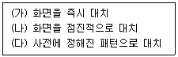
- (가), (나), (다)
- (나), (다), (가)
- (다), (가), (나)
- (가), (다), (나)
(정답률: 알수없음)
66. AM 송신기 회로에 있는 완충 증폭부에 대한 설명으로 틀린 것은?
- 부하변동에 따른 주파수 변동 방지를 위한 증폭기이다.
- 주로 효율이 높은 B급 증폭 발진기를 사용한다.
- 주로 고주파 증폭기에 설치된다.
- 발진주파수의 변동을 방지한다.
(정답률: 알수없음)
67. 다음 중 FM 송신기 보조회로가 아닌 것은?
- 순시 주파수 편이회로
- 프리 엠퍼시스회로
- 자동 주파수 제어회로
- 스켈치 회로
(정답률: 70%)
68. 디지털라디오전송방식에서 대역외(Out of band)방식에 해당되지 않은 것은?
- 기존의 FM신호와 같은 주파수 대역을 공유한다.
- 아날로그 방송이 서비스되는 FM대역외에 주파수 대역을 이용하는 방식이다.
- 유렵각국이 공동으로 연구하여 단일규격의 EUREKA-147시스템을 말한다.
- 새로운 주파수 대역의 이용과 광대역 전송을 특징으로 한다.
(정답률: 알수없음)
69. CATV 시스템에서 분기단자에 신호를 가했을 때 입력레벨과 간선의 출력단자에서 나오는 출력레벨과의 차에 의한 손실은?
- 분배손실
- 결합손실
- 단자간 결합손실
- 역결합손실
(정답률: 알수없음)
70. 케이블 TV 시스템에서 0[dBmV]인 입력신호가 23[dB]의 증폭기와 500[m]의 케이블을 거치면 출력은 얼마가 되는가? (단, Cable Loss 특성이 4[dB]/100[m]이다.)
- 0[dBmV]
- 1[dBmV]
- 2[dBmV]
- 3[dBmV]
(정답률: 알수없음)
71. 다음 중 국대 디지털유선방송의 상·하향 대역 분리 방식으로 옳은 것은?
- Sub Split 방식
- Mid Split 방식
- High Split 방식
- Extended Mid Split 방식
(정답률: 알수없음)
72. 다음 중 인접채널의 신호 방해 현상이 발생하는지를 알아보기 위한 측정으로 옳은 것은?
- 영상과 음성반송파의 레벨 측정
- 영상반송파의 주파수 대역 측정
- 인접채널의 위상 측정
- 험변조도 측정
(정답률: 알수없음)
73. 다음 중 디지털TV 기술의 특징이 아닌 것은?
- 아날로그 신호에 비해 잡음에 약하다.
- 오류정정 기술을 사용할 수 있다.
- 전송, 복제, 축적에 따른 열화가 적다.
- 영상 및 음성신호의 대폭적인 대역압축이 가능하다.
(정답률: 알수없음)
74. 다음 중 디지털 신호의 타이밍이 이상적인 위치에서 순간 변하여 원치 않는 신호의 위상으로 변이되는 것을 무엇이라 하는가?
- 다중화기
- 슬립(Slip)
- 지터(Jitter)
- 에러(Error)
(정답률: 알수없음)
75. 다음 중 디지털 위성방송의 개념을 잘못 설명한 것은?
- 디지털 변조방식에 의해 영상, 음성 등의 정보량을 고능률적으로 압축함으로써 다채널의위성방송이 가능
- 고기능화로 다양한 미디어를 통합한 멀티미디어 서비스 가능
- 단방향화로 통신망과 데이터베이스 등 여타 미디어와의 접속이 가능
- 방송 외에 다양한 부가서비스 등을 제공
(정답률: 알수없음)
76. 지상파 DMB는 6[MHz] 대역을 세 개의 앙상블 블록으로 나누어 사용하는데, 이 때 오류정정부호를 제외한 각 블록에서 실질적으로 사용 가능한 데이터율은?
- 64[kbps]
- 512[kbps]
- 1.152[Mbps]
- 2.048[Mbps]
(정답률: 알수없음)
77. 다음 중 M/W(Microwave) 안테나회선의 송신기출력(Pt)이 10[dBm]이고, 송신안테나의 이득(Gt)은 30[dB], 수신안테나의 이득(Gr)은 5[dB], 자유공간 손실(L)은 5[dB]일 때, 수신전계강도(Pr)는?
- 40[dBm]
- 30[dBm]
- 20[dBm]
- 10[dBm]
(정답률: 알수없음)
78. 아날로그 신호에 비해 잡음에 강하고 송신전력이 적게 들며 잔상(Ghost) 방해에도 강해 HDTV 방송에서 사용하는 변조방식은?
- FDM(Frequency Division Multiplexing)
- COFDM(Coded Orthogonal Frequency Division Multiplexing)
- OFDM(Orthogonal Frequency Division Multiplexing)
- WDM(Wavelength Division Multiplexing)
(정답률: 알수없음)
79. 다음 중 방송중계를 위한 디지털 전송로 설계 시 유의해야할 사항이 아닌 것은?
- 아날로그에 비해 직선성이 양호해야 한다.
- 안테나 구경을 크게 하고, 낮은 VSWR의 웨이브가이드를 사용해야 한다.
- 디지털 신호는 아날로그와 달리 Threshold 레벨까지 떨어져도 사용할 수 있다.
- 방송 신호를 전송하는데 충분한 시스템 게인을 갖도록 설계해야 한다.
(정답률: 알수없음)
80. 다음 TV배관의 요건 중 구내전송선로설비용 배관을 별도 설치할 필요 없는 조건이다. 다음 중 해당하지 않는 것은?
- 공시청 안테나용 배관을 공동으로 사용할 수 있는 경우
- 전화 또는 이동통신용 배관을 공동으로 사용할 수 있는 경우
- 공동구를 공동으로 사용할 수 있는 경우
- 공시청 안테나용 태관을 공동으로 사용할 수 잇는 경우, 7C용 2조 포설시 16[mm] 이상 배관 사용
(정답률: 알수없음)
5과목: 전자계산기 일반 및 방송설비기준
81. 다음 중 프로그램의 이식성(Portability)을 가능하게 하는 주소지정방식은 무엇인가?
- 상대주소지정(Relative addressing)
- 간접주소지정(Indirect addressing)
- 직접주소지정(Direct addressing)
- 베이스레지스터 주소지정(Base-register addressing)
(정답률: 알수없음)
82. 다음 중 비동기 인터페이스(Asynchronous Interface)에 대한 설명으로 틀린 것은?
- 컴퓨터와 입출력 장치가 데이터를 주고 받을 때 일정한 클록 신호의 속도에 맞추어 동기를 맞추는 방식이다.
- 동기를 맞추는 약정된 신호는 시작(Start), 종료(Stop) 비트 신호이다.
- 컴퓨터 내에 있는 입출력 시스템의 전송 속도와 입출력 장치의 속도가 현저하게 다를 때 사용한다.
- 일반적으로 컴퓨터 본체와 주변 장치 간에 직렬 데이터 전송을 하기 위해 사용된다.
(정답률: 알수없음)
83. 8진수 (735.56)8을 16진수로 전환한 값은?
- (1DD.B8)16
- (1DD.B1)16
- (EE1.B1)16
- (EE1.B8)16
(정답률: 알수없음)
84. 다음 중 부울대수(Boclean Algebra) 값이 틀린 것은?
- A + A′ • B = A + B
- A • (A′ + B) = A • B
- A + A • B = A
- A + A = 1
(정답률: 알수없음)
85. 다음 중 컴퓨터 운영체제(Operating System)의 기능으로 틀린 것은?
- 프로세스의 생성, 제거, 중지 등을 다루는 프로세스 관리
- 프로세스의 적재와 회수를 다루는 기억장치 관리
- 입출력 장치의 상태를 파악하는 입출력 장치 관리
- 문서의 작성과 수정, 삭제 등에 관한 사용자 업무처리 관리
(정답률: 알수없음)
86. 다음 설명에 해당하는 것은?
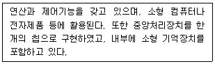
- 마이크로프로세서(Micriprocessor)
- 마이크로컴퓨터(Microcomputer)
- 연산장치(ALU: Arithmetic Logic Unit)
- 마더보드(Motherboard)
(정답률: 알수없음)
87. 다음 중 명령어를 실행하기 위해 기본적으로 필요한 CPU 내부 레지스터에 대한 설명으로 옳은 것은?
- IR(Instruction Register)는 기억장치에 저장될 데이터 혹은 기억장치로부터 읽혀진 데이터가 일시적으로 저장되는 버퍼레지스터이다.
- MAR(Memory Address Register)는 가장 최근에 인출된 명령어가 저장되어 있는 레지스터이다.
- MBR(Memory Buffer Register)는 프로그램 카운터에 저장된 명령어 주소가 시스템 주소 버스로 출력되기 전에 일시적으로 저장되는 주소 레지스터이다.
- AC(Accumulator)는 CPU 내에서 산술 논리 장치의 중간 결과를 저장하는 레지스터이다.
(정답률: 90%)
88. 접근시간(Access Time)과 사이클시간(Cycle Time)에 관한 설명으로 틀린 것은?
- 사이클시간이 접근시간보다 대개 시간이 더 걸린다.
- 접근시간은 메모리로부터 정보를 가져오는 데 걸리는 시간이다.
- 접근시간은 주기억장치에만 관계되며 보조기억장치와는 상관이 없다.
- 접근시간은 메모리로부터 정보를 가지고 나와서 다시 재 기억시키는 데 걸리는 시간이다.
(정답률: 알수없음)
89. 다음은 명령어의 형식에 대한 설명이다. 괄호 안에 들어갈 용어로 옳은 것은?
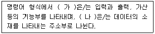
- 가: Operation code1, 나 : Opreation code2
- 가: Operand, 나 : Opreation code1
- 가: Operation code, 나 : Operand
- 가: Operand, 나 : Instruction code
(정답률: 알수없음)
90. 다음 중 프로그램 카운터와 명령의 번지부분을 더해 유효번지로 결정하는 주소 지정 방식은?
- 즉각 주소 지정 방식(Immediate Addressing Mode)
- 간접 주소 지정 방식(Indirect Addressing Mode)
- 직접 주소 지정 방식(Direct Addressing Mode)
- 상대 주소 지정 방식(Relative Addressing Mode)
(정답률: 알수없음)
91. 데이터 전송 시 전압의 크기를 똑같이 하고, 위상을 45도, 135도, 225도, 315도 4가지로 전송하는 방식은?
- QAM
- QPSK
- MPEG
- ATM
(정답률: 90%)
92. 지상파 텔레비전 방송사업의 허가를 받아 행하는 텔레비전방송 채널에 시청자가 직접 제작한 시청자 참여프로그램을 매월 몇 분 이상 편성해야 하는가?
- 50분
- 60분
- 90분
- 100분
(정답률: 알수없음)
93. 다음 중 방송법의 목적에 해당되지 않는 것은?
- 방송의 자유와 독립보장
- 방송설비공사의 책임
- 시청자의 권익보호
- 민주적 여론 형성
(정답률: 알수없음)
94. 다음 용어 중 보도·교양·오락 등 다양한 방송분야 상호간에 조화를 이루도록 방송프로그램을 편성하는 것은?
- 종합편성
- 전문편성
- 특수편성
- 방송편성
(정답률: 알수없음)
95. 다음 중 전파법상의 방송국 재허가를 받고자 하는 자는 재허가 신청서를 언제 과학기술정보통신부장관에게 제출하여야 하는가?
- 허가의 유효기간 만료전 1월이상 4월이내의 기간
- 허가의 유효기간 만료전 2월이상 3월이내의 기간
- 허가의 유효기간 만료전 2월이상 4월이내의 기간
- 허가의 유효기간 만료전 3월이상 6월이내의 기간
(정답률: 알수없음)
96. 다음 중 경미한 공사로서 정보통신공사업자 이외의 자가 시공할 수 있는 것은?
- 간이무선국·아마추어무선국 설비 공사
- 방송케이블설비 공사
- 송출설비 공사
- 방송관로설비 공사
(정답률: 알수없음)
97. 종합유선 방송사업자가 확보하여야 할 종사자의 자격과 정원 중 3만 가입자 미만일 때의 자격과 정원이 맞는 것은?
- 방송통신산업기사 1명 이상
- 방송통신기능사 2명 이상
- 무선설비기능사 1명 이상
- 통신선로기능사 2명 이상
(정답률: 알수없음)
98. 다음 중 방송법상 1년 이하의 징역 또는 3천만원 이하의 벌금에 해당하는 사항은?
- 허위 기타 부정한 방법으로 변경허가를 받거나 변경 승인을 얻거나 변경 등록을 한 자
- 방송편성에 관하여 규제나 간섭을 한 자
- 허위 기타 부정한 방버으로 허가 또는 재허가를 받은 경우
- 허가 또는 재허가를 받지 아니한 경우
(정답률: 알수없음)
99. 감리제외 대상인 정보통신공사의 범위에 해당되지 않는 것은?
- 안전, 재해예방 및 운용·관리를 위한 공사로서 총공사금액이 1억 이상인 공사
- 전기통신사업법에 의한 전기통신사업자가 전기통신 역무를 제공하기 위한 공사로서 총공사금액이 1억원 미만인 경우
- 6층 미만으로서 연면적 5천제곱미터 미만인 건축물에 설치되는 정보통신설비의 설치공사
- 기타 공중의 통신에 영향을 미치지 아니하는 정보통신 설비의 설치공사로서 과학기술정보통신부장관이 정하여 고시하는 공사
(정답률: 알수없음)
100. 과학기술정보통신부장관이 방송통신서비스의 발전을 위해 수립·시행하여야 하는 시책에 해당되지 않는 것은?
- 방송통신기술의 국제협력에 관한 사항
- 방송통신기술의 교육진흥 및 보급에 관한 사항
- 방송통신 기술정보의 원활한 유통을 위한 사항
- 방송통신 기술협력, 기술지도 및 기술이전에 관한 사항
(정답률: 알수없음)